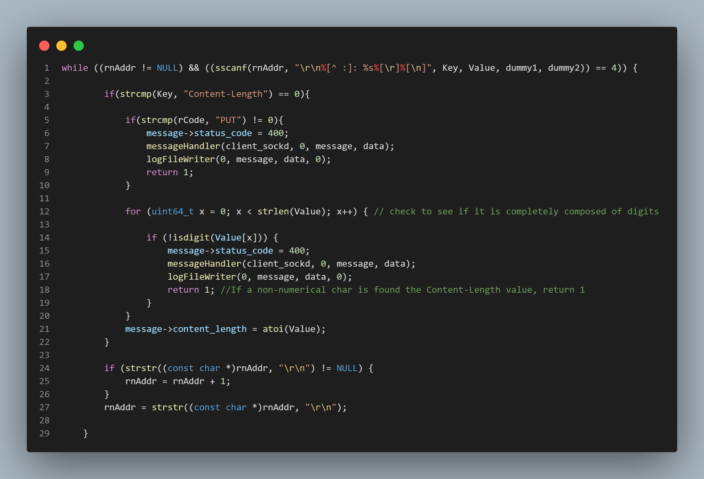
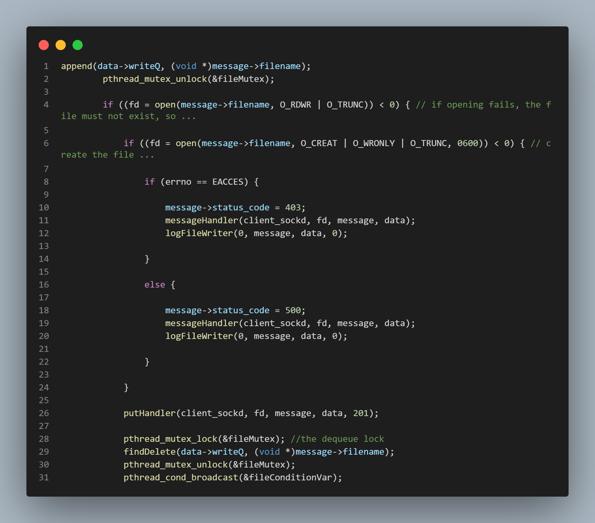
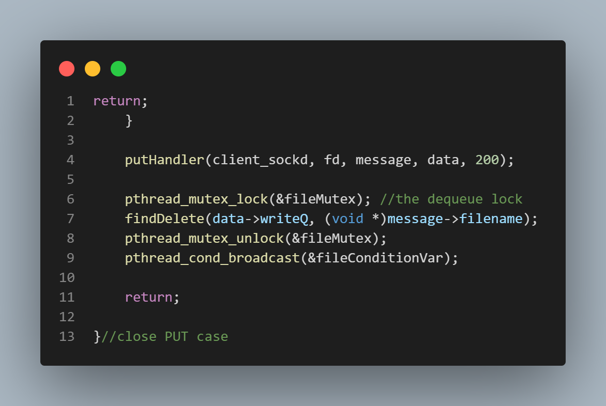

Single threaded latency just too much to bear?
Gotta increase that thread count, and I'm not talkin' cotton sheets!
Is it necessary to "thread" your server?
If you want any chance at accommodating scale, then the answer is "yes".
A server that runs on a single lightweight thread will have extremely high latency, because the number of requests it wil be able to service at one time will be limited to one because single thread = single task. This means that any requests that reach the server while another request is being handled will be enqueued or forced to essentially wait in line until the request ahead of them has been serviced. This, of course, increases latency because it reduces the size of the "pipe" to such that it is only able to accommodate a single task at a time. By "threading" the server or providing the server with multiple threads with which to handle requests, we have essentially increased the size of that "pipe" to whatever the number of threads being used is. If the server now has, let's say, 4 threads to work with instead of only 1, it can handle 4 requests simultaneously, but the 5th and subsequent concurrent requests will have to be enqueued.
The Producer - Consumer Dynamic
The "producer-consumer dynamic" simply refers to the concept of one block of code "producing" work for another block of code to "consume". In this case, the "producer" code represents the server's main thread, and the "consumer" code represents the server's worker threads. The top pic is of the "producer" code, and the bottom pic is of the "consumer" code. The "clientSockQ" is just a doubly linked list being used as a queue. The queue takes requests in the form of socket descriptors. In the producer block, a client request is only prepended (enqueued) to the queue if there are less items in the queue than there are threads to service requests because if there are more items in the queue than there are threads to service requests, it must mean that all the threads are busy servicing other requests, and so any incoming requests must be for forced to wait (or enqueue) at a variable defined in the main function called "ret" (which can be seen in the top-most picture) which represents the listening point for the server. Because the "clientSockQ" is a shared resource, meaning it is available and visible to all server threads, any accessing of this resource must be enclosed within an "atomic" code block, meaning that access to this code block becomes restricted to one thread at a time. By a similar principle, in the consumer block, threads are only active if there is work to be performed, (requests to be serviced), meaning if there are descriptors in the clientSockQ. If there are no items in the queue, it must mean there are no requests to be serviced, and so the worker threads lie dormant on the conditional wait variable.

Parsing the Header
Parsing the HTTP header was definitely a more daunting task than initially expected. The header is of
course the portion of data that the server receives that prefaces the actual file data (if the request were
a write request, that is). It is always terminated by a double new line - carriage return ("\r\n\r\n") and
has a very specific structure, one of any number of headers, there are requirements for the sub-headers that must be
included in the overall header depending on what type of request is being parsed (PUT, GET, etc). For example, if the
request is a "PUT" (write) request, there
must be a "Content-Length" header specifying the length of the incoming message body or file. As mentioned, the header
has a format that must be adhered to. This format is one of "Key-Value". For example, take the "Content-Length" header. If the
incoming file had content length 67 bytes, the "Content-Length" header would look like the following:
"Content-Length: 67"
So, our task in "parsing the header" is really to incrementally make our way through the entire header, checking it
not only for structural deformities, but also for the presence of particular sub-headers that should be accounted for
given the type of request (PUT, GET, etc).
To accomplish this, a regular expression pattern was used that was constructed based on the known format of the HTTP header.
This is depicted on line 1 in the picture to the right.


Preventing Race Conditions in the Form of
Write-Write, Read-Write, and
Write-Read Conflicts.
When implementing a multi-threaded HTTP server, it is entirely possible
that two threads may attempt to access the same file at the same time,
because it is entirely possible that two different clients may request
access to the same file at the same time. Well what happens if both clients
are trying to write to the same file at the same time? If we don't implement
some method of preventing this, we will end up with utter chaos inside the file.
If one client is trying to read from a file that another client is concurrently
trying to write to, our server will suffer from a host of problems from potential
buffer smashing to simply not having a concrete method of determining the "current"
form of the file.
We need to use mutex locks here in order to, as with the producer-consumer dynamic,
enclose any access to a shared resource (all files stored on the server represent shared resources)
within an "atomic" code block, meaning that access to this block is restricted to a single thread
at a time. However, we don't want to effectively turn our multi-threaded server into a single
threaded server by forcing every thread attempting to access any file to wait
until the thread ahead of it is finished with its file access, so how do we implement this?
Well, we only want a thread to wait if it is attempting to access a file that is currently being accessed,
and then only if the form of access presents a potential race condition. So if thread "a" is currently
writing to file "x", and along comes thread "b" that wants to read from file "x", we want thread "b"
to wait for thread "a" to finish. However, if thread "a" is reading from file "x" and along comes thread
"b" that wants to also read from file "x", this doesn't present a potential race condition, so
we don't care. It's perfectly fine to let both thread "a" and thread "b" read from file "x"
simultaneously. Also, if thread "a" is writing to file "x" and along comes thread "b" that wants
to read from or write to file "y", this is perfectly fine as well. This doesn't present
a potential race condition because there are two different files being accessed in this situation.
In the pictures to the left of this text, the PUT case (the case in which clients are trying to
write to a file) is being handled. In lines 7 - 15 in the topmost picture, file permissions are
being checked. As long as the file's permission status permits access, the next step will be taken,
which is to begin the "enqueue" code block. The lock is set, and the while loop's conditional statement
is checked. The while loop's conditional statement simply checks the contents of two different linked lists
the purpose of which are to store the file names of files currently being accessed by other threads. One linked
list stores the names of files being written to, and one stores the names of files being read from.
The while loop's conditional statement checks the contents of both of these lists for the name of the
file that the thread is attempting to access because this is the PUT (write) case being handled which means we must force the thread
to wait if the file it wants to write to is currently being written to OR if it is currently being read from.
If the name of the file is found in either of these lists, the thread is forced to wait on the
conditional wait variable. Once a thread finishes with its operations upon a file, a signal is sent
to the conditional wait variable that allows the thread waiting above in the "enqueue" block to check the
while loop's conditional statement again. This signal is sent from either line 31 in the second pic
from the top, or from line 9 in the bottom most pic. Eventually, a waiting thread will get its chance
to "stake its claim" on the file it wants to write to. It does this by finally getting past the while loop
and "appending" the name of the file to the linked list that stores the names of files currently being
written to. This happens on line 1 of the second pic from the top. Once this happens, the thread gets
the file all to itself until it's done with its operations. Once it's finished, it relinquishes its "claim"
on the file by removing the file name from the "currently being written to" list. This happens on either
line 29 of the second pic from the top, or on line 7 of the bottom-most pic.
Synopsis
The multi-threaded HTTP server written in the C programming language. This project was something of a
tour de force for me. I really learned so much from engaging with this project. From writing my own tests
to bigger conceptual aspects of computing, the material, techniques, and subject matter that this project exposed me to
will likely be with me forever. I had a ton of help throughout the process for this project as well. I couldn't have
learned all that I did without those who were there to guide me and teach me; to have conversations with me even
when the subject of conversation was one that had already been discussed.
I have containerized this project using Docker as you will see when you visit the repository by clicking on the "VIEW REPOSITORY" button below.
There you will find a full README file containing all the instructions necessary to play around with the server.